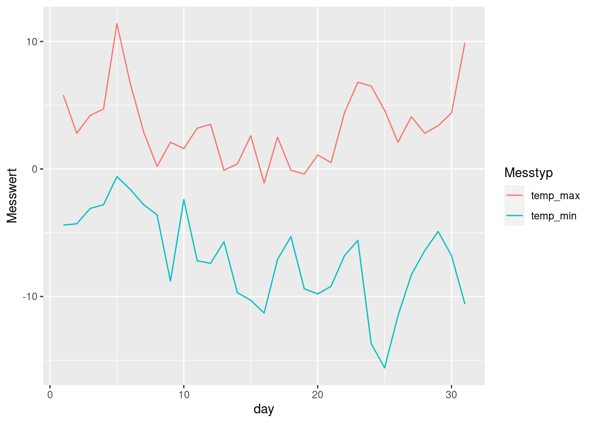
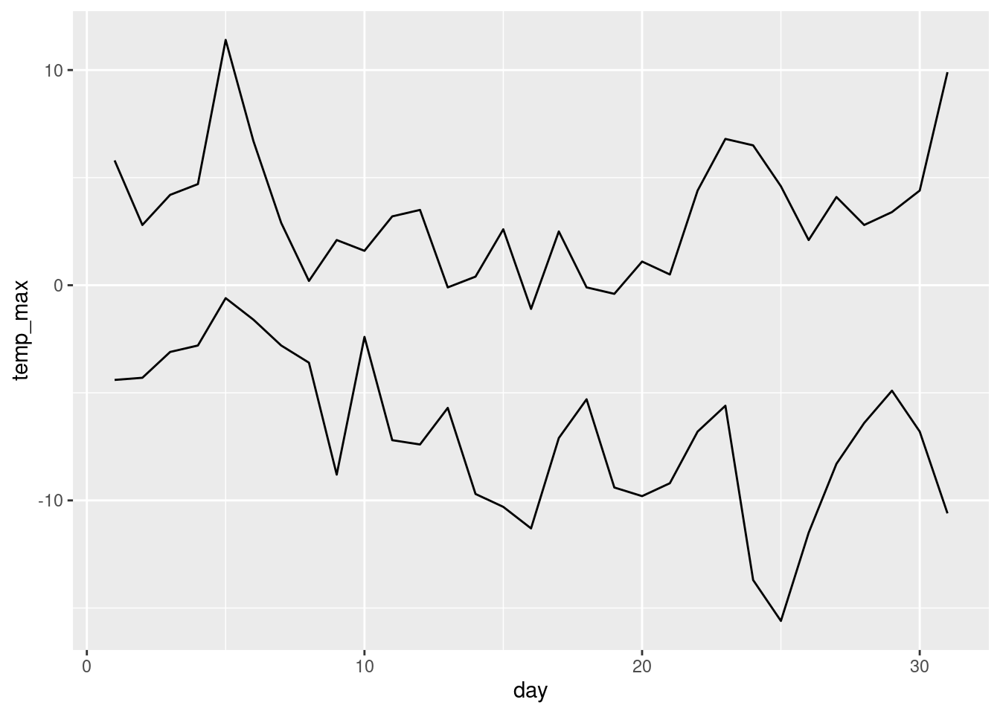

Prepro 3: Demo
In dieser DEMO möchten wir weitere Werkzeuge aus dem Tidyverse vorstellen und mit Beispielen illustrieren. Die tidyverse-Tools erleichtern den Umgang mit Daten ungeheuer und haben sich mittlerweile zu einem “must have” im Umgang mit Daten in R entwickelt.
Wir können Euch nicht sämtliche Möglichkeiten von tidyverse zeigen. Wir fokussieren uns deshalb auf weitere wichtige Komponenten 1 und zeigen zusätzliche Funktionalitäten, die wir oft verwenden und Euch ggf. noch nicht bekannt sind. Wer sich vertieft mit dem Thema auseinandersetzen möchte, der sollte sich unbedingt das Buch Wickham and Grolemund (2017) beschaffen. Eine umfangreiche, aber nicht ganz vollständige Version gibt es online1 , das vollständige eBook kann über die Bibliothek bezogen werden2.
Wir benötigen dazu folgende Packages:
library(dplyr)
library(tidyr)
library(lubridate)
library(readr)
library(ggplot2)Split-Apply-Combine (Beispiel 1)
df <- data.frame(
key = c("A","B","C","A","B","C","A","B","C"),
data = c(0, 5, 10, 5, 10, 15, 10, 15, 20)
)
df key data
1 A 0
2 B 5
3 C 10
4 A 5
5 B 10
6 C 15
7 A 10
8 B 15
9 C 20sry <- df %>%
group_by(key) %>%
summarise(Summe = sum(data))
sry <- df %>%
group_by(key) %>%
summarise(
Summe = sum(data),
Minimum = min(data),
Maximun = max(data)
)Split-Apply-Combine (Beispiel 2)
?mtcarsmtcars <- mtcars # Einlesen des Beispielsdatensatzes mtcars
by_cyl <- group_by(mtcars, cyl) # Gruppieren nach Anzahl Zylinder (cyl)
summarise(by_cyl,mean_mpg = mean(mpg)) # Berechnen des Mittelwerts pro # A tibble: 3 × 2
cyl mean_mpg
<dbl> <dbl>
1 4 26.7
2 6 19.7
3 8 15.1 # Zylinder-Gruppe, resp. Kategorie
by_cyl_2 <- group_by(mtcars,cyl,am) # Gruppieren nach Anzahl Zylinder (cyl)
# UND Schaltung automatisch oder manuell (am)
summarise(by_cyl_2,mean_mpg = mean(mpg))# A tibble: 6 × 3
# Groups: cyl [3]
cyl am mean_mpg
<dbl> <dbl> <dbl>
1 4 0 22.9
2 4 1 28.1
3 6 0 19.1
4 6 1 20.6
5 8 0 15.0
6 8 1 15.4Split-Apply-Combine (Beispiel 3)
Daten Laden
Wir laden die Wetterdaten (Quelle MeteoSchweiz) von der letzten Übung.
wetter <- read_csv(here("data","weather.csv"),
col_types = cols(
col_factor(levels = NULL),
col_datetime(format = "%Y%m%d%H"),
col_double()
)
)Kennwerte berechnen
Wir möchten den Mittelwert aller gemessenen Temperaturwerte berechnen. Dazu könnten wir folgenden Befehl verwenden:
mean(wetter$tre200h0, na.rm = TRUE) [1] 6.324744Die Option na.rm = T bedeutet, dass NA Werte von der Berechnung ausgeschlossen werden sollen.
Mit der selben Herangehensweise können diverse Werte berechnet werden (z.B. das Maximum (max()), Minimum (min()), Median (median()) u.v.m.).
Diese Herangehensweise funktioniert nur dann gut, wenn wir die Kennwerte über alle Beobachtungen für eine Variable (Spalte) berechnen wollen. Sobald wir die Beobachtungen gruppieren wollen, wird es schwierig. Zum Beispiel, wenn wir die durchschnittliche Temperatur pro Monat berechnen wollen.
Convenience Variablen
Um diese Aufgabe zu lösen, muss zuerst den Monat extrahiert werden (der Monat ist die convenience variabel). Hierfür brauchen wir die Funktion lubridate::month().
Nun kann kann die convenience Variable “Month” erstellt werden. Ohne dpylr wird eine neue Spalte folgendermassen hinzugefügt.
wetter$month <- month(wetter$time)Mit dplyr (siehe 3) sieht der gleiche Befehl folgendermassen aus:
wetter <- mutate(wetter,month = month(time))Der grosse Vorteil von dplyr ist an dieser Stelle noch nicht ersichtlich. Dieser wird aber später klar.
Kennwerte nach Gruppen berechnen
Um mit base R den Mittelwert pro Monat zu berechnen, kann man zuerst ein Subset mit [] erstellen und davon den Mittelwerb berechnen, z.B. folgendermassen:
mean(wetter$tre200h0[wetter$month == 1], na.rm = TRUE)[1] -1.963239Dies müssen wir pro Monat wiederholen, was natürlich sehr umständlich ist. Deshalb nutzen wir das package dplyr. Damit geht die Aufgabe (Temperaturmittel pro Monat berechnen) folgendermassen:
summarise(group_by(wetter,month),temp_mittel = mean(tre200h0, na.rm = TRUE))# A tibble: 12 × 2
month temp_mittel
<dbl> <dbl>
1 1 -1.96
2 2 0.355
3 3 2.97
4 4 4.20
5 5 11.0
6 6 12.4
7 7 13.0
8 8 15.0
9 9 9.49
10 10 8.79
11 11 1.21
12 12 -0.898Verketten vs. verschachteln
Auf Deutsch übersetzt heisst die obige Operation folgendermassen:
- nimm den Datensatz
wetter - Bilde Gruppen pro Jahr (
group_by(wetter,year)) - Berechne das Temperaturmittel (
mean(tre200h0))
Diese Übersetzung R-> Deutsch unterscheidet sich vor allem darin, dass die Operation auf Deutsch verkettet ausgesprochen wird (Operation 1->2->3) während der Computer verschachtelt liest 3(2(1)). Um R näher an die gesprochene Sprache zu bringen, kann man den %>%-Operator verwenden (siehe 4).
# 1 nimm den Datensatz "wetter"
# 2 Bilde Gruppen pro Monat
# 3 berechne das Temperaturmittel
summarise(group_by(wetter,month),temp_mittel = mean(tre200h0))
# \_1_/
# \__________2_________/
#\___________________3_______________________________________/
# wird zu:
wetter %>% # 1
group_by(month) %>% # 2
summarise(temp_mittel = mean(tre200h0)) # 3Dieses Verketten mittels %>% (genannt “pipe”) macht den Code einiges schreib- und leserfreundlicher, und wir werden ihn in den nachfolgenden Übungen verwenden. Die “pipe” wird mit dem package magrittr bereitgestellt und mit dplyr mitinstalliert.
Zu dplyr gibt es etliche Tutorials online (siehe5), deshalb werden wir diese Tools nicht in allen Details erläutern. Nur noch folgenden wichtigen Unterschied zu zwei wichtigen Funktionen in dpylr: mutate() und summarise().
summarise()fasst einen Datensatz zusammen. Dabei reduziert sich die Anzahl Beobachtungen (Zeilen) auf die Anzahl Gruppen (z.B. eine zusammengefasste Beobachtung (Zeile) pro Jahr). Zudem reduziert sich die Anzahl Variablen (Spalten) auf diejenigen, die in der “summarise” Funktion spezifiziert wurde (z.B.temp_mittel).- mit
mutatewird eindata.framevom Umfang her belassen, es werden lediglich zusätzliche Variablen (Spalten) hinzugefügt (siehe Beispiel unten).
# Maximal und minimal Temperatur pro Kalenderwoche
weather_summary <- wetter %>% #1) nimm den Datensatz "wetter"
filter(month == 1) %>% #2) filter auf den Monat Januar
mutate(day = day(time)) %>% #3) erstelle eine neue Spalte "day"
group_by(day) %>% #4) Nutze die neue Spalte um Gruppen zu bilden
summarise(
temp_max = max(tre200h0, na.rm = TRUE), #5) Berechne das Maximum
temp_min = min(tre200h0, na.rm = TRUE) #6) Berechne das Minimum
)
weather_summary# A tibble: 31 × 3
day temp_max temp_min
<int> <dbl> <dbl>
1 1 5.8 -4.4
2 2 2.8 -4.3
3 3 4.2 -3.1
4 4 4.7 -2.8
5 5 11.4 -0.6
6 6 6.7 -1.6
7 7 2.9 -2.8
8 8 0.2 -3.6
9 9 2.1 -8.8
10 10 1.6 -2.4
# … with 21 more rowsReshaping data
Breit -> lang
Die Umformung von Tabellen breit->lang erfolgt mittels tidyr(siehe 6). Auch dieses package funktioniert wunderbar mit piping (%>%).
weather_summary %>%
pivot_longer(c(temp_max,temp_min))# A tibble: 62 × 3
day name value
<int> <chr> <dbl>
1 1 temp_max 5.8
2 1 temp_min -4.4
3 2 temp_max 2.8
4 2 temp_min -4.3
5 3 temp_max 4.2
6 3 temp_min -3.1
7 4 temp_max 4.7
8 4 temp_min -2.8
9 5 temp_max 11.4
10 5 temp_min -0.6
# … with 52 more rowsIm Befehl pivot_longer() müssen wir festlegen, welche Spalten zusammengefasst werden sollen (hier: temp_max,temp_min,temp_mean). Alternativ können wir angeben, welche Spalten wir nicht zusammenfassen wollen:
weather_summary %>%
pivot_longer(-day)# A tibble: 62 × 3
day name value
<int> <chr> <dbl>
1 1 temp_max 5.8
2 1 temp_min -4.4
3 2 temp_max 2.8
4 2 temp_min -4.3
5 3 temp_max 4.2
6 3 temp_min -3.1
7 4 temp_max 4.7
8 4 temp_min -2.8
9 5 temp_max 11.4
10 5 temp_min -0.6
# … with 52 more rowsWenn wir die Namen neuen Spalten festlegen wollen (anstelle von name und value) erreichen wir dies mit names_to bzw. values_to:
weather_summary_long <- weather_summary %>%
pivot_longer(-day, names_to = "Messtyp", values_to = "Messwert")Die ersten 6 Zeilen von weather_summary_long:
| day | Messtyp | Messwert |
|---|---|---|
| 1 | temp_max | 5.8 |
| 1 | temp_min | -4.4 |
| 2 | temp_max | 2.8 |
| 2 | temp_min | -4.3 |
| 3 | temp_max | 4.2 |
| 3 | temp_min | -3.1 |
Die ersten 6 Zeilen von wetter_sry:
| day | temp_max | temp_min |
|---|---|---|
| 1 | 5.8 | -4.4 |
| 2 | 2.8 | -4.3 |
| 3 | 4.2 | -3.1 |
| 4 | 4.7 | -2.8 |
| 5 | 11.4 | -0.6 |
| 6 | 6.7 | -1.6 |
Beachte: weather_summary_long umfasst 62 Beobachtungen (Zeilen), das sind doppelt soviel wie weather_summary, da wir ja zwei Spalten zusammengefasst haben.
nrow(weather_summary)[1] 31nrow(weather_summary_long)[1] 62Lange Tabellen sind in verschiedenen Situationen praktischer. Beispielsweise ist das Visualisieren mittels ggplot2 (dieses Package werdet ihr im Block “InfoVis” kennenlernen) mit long tables wesentlich einfacher.
ggplot(weather_summary_long, aes(day,Messwert, colour = Messtyp)) +
geom_line()
Lang -> breit
Das Gegenstück zu pivot_longer ist pivot_wider. Mit dieser Funktion können wir eine lange Tabelle in eine breite überführen. Dazu müssen wir in names_from angeben, aus welcher Spalte die neuen Spaltennamen erstellt werden sollen (names_from) und aus welcher Spalte die Werte entstammen sollen (values_from):
weather_summary_long %>%
pivot_wider(names_from = Messtyp, values_from = Messwert)# A tibble: 31 × 3
day temp_max temp_min
<int> <dbl> <dbl>
1 1 5.8 -4.4
2 2 2.8 -4.3
3 3 4.2 -3.1
4 4 4.7 -2.8
5 5 11.4 -0.6
6 6 6.7 -1.6
7 7 2.9 -2.8
8 8 0.2 -3.6
9 9 2.1 -8.8
10 10 1.6 -2.4
# … with 21 more rowsZum Vergleich: mit einer wide table müssen wir in ggplot2 jede Spalte einzeln plotten. Dies ist bei wenigen Variabeln wie hier noch nicht problematisch, aber bei einer hohen Anzahl wir dies schnell mühsam.
ggplot(weather_summary) +
geom_line(aes(day, temp_max)) +
geom_line(aes(day, temp_min))
http://r4ds.had.co.nz/↩︎
https://ebookcentral.proquest.com/lib/zhaw/detail.action?docID=4770093↩︎
Wickham and Grolemund (2017), Kapitel 10 / http://r4ds.had.co.nz/transform.html↩︎
Wickham and Grolemund (2017), Kapitel 14 / http://r4ds.had.co.nz/pipes.html↩︎
Wickham and Grolemund (2017), Kapitel 10 / http://r4ds.had.co.nz/transform.html, oder Hands-on dplyr tutorial..↩︎
https://r4ds.had.co.nz/tidy-data.html#pivoting↩︎